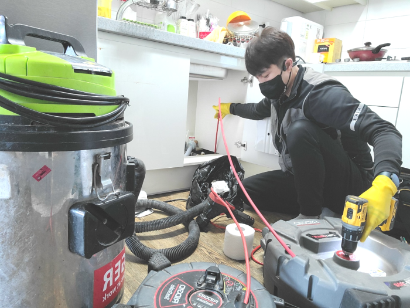
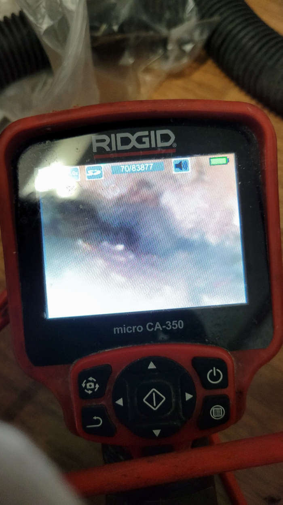
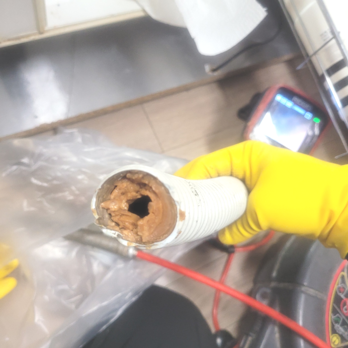
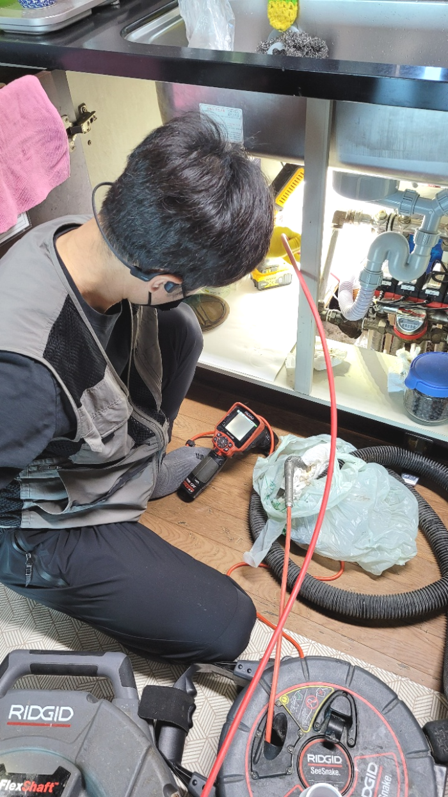
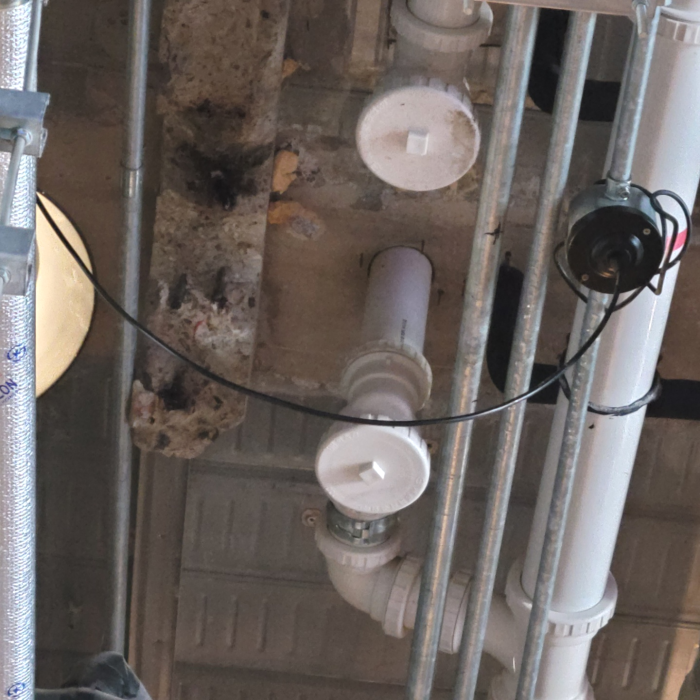
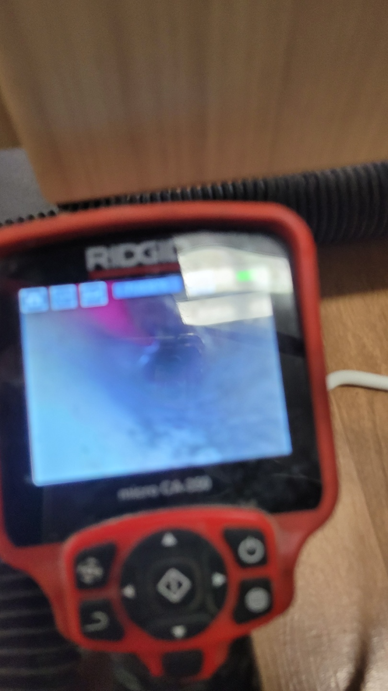

🏠 수원 송죽동 싱크대배수관막힘 조원동 하수도막힘 뚫음 설비전문
수원 원동 싱크대막힘 전문 시공 후기

📋 작업 개요
- 위치: 수원 원동, 원동, 수원
- 서비스 유형: 싱크대막힘, 변기막힘, 하수구막힘, 배관막힘, 역류해결, 뚫는업체, 배관청소
- 작업 일시: 2023. 12. 24. 0:50
- 업체명: 하수구수사대 (010-5615-2118)
🔍 문제 상황
안녕하세요^^
설비전문업체 "하수구수사대"를 찾아주셔서 감사합니다.
안녕하십니까^^ 대개 우리들이 생활속에서 당연하게 사용하고 있는 여러 종류의 배수구시설들이 연결되어 있는 배관에 막힘증상이 나타 난다면 많은 불편함이 생길겁니다.
저희는 배수나 배관에서 문제가 발생되었을 때 신속하게 현장으로 출동해 명확한 원인을 파악하여 꼼꼼하고 세심하게 작업을 해결해 나갑니다.
수원 송죽동 싱크대배수관막힘 조원동 하수도막힘 뚫음 설비전문

🔎 원인 분석
💡 전문가 진단: 수원 송죽동 싱크대배수관막힘 조원동 하수도막힘 뚫음 설비전문
여러 배관가 물이 안통할 만큼 막혔다면 어떤 장비로 해결을 해야 할까요? 어떤 상태인지에 따라 방법과 장비가 달라지는데요 이물질의 모양이 예상한 것보다 부드럽고 조금 막혀있다면 약품을 여러번 부어서 없애는 방법도 있지만 쉽게 뚫리지 않는 경우도 있습니다.
그래서 어떠한 물질이 하수를 막고 있는지를 내시경 카메라를 통해서 확인을 하는 것이 필요합니다. 막혀있는 물질이 무엇이냐에 따라서 작업의 방향이 결정이 되고 또한 어떠한 장비를 사용해야 할지를 판단할 수 있습니다.
배출구 내부에 어느 정도 이물질이 쌓여있는지 확인하기 위해서는 내시경 카메라를 넣고 원인을 파악하는데요. 기름 슬러지가 원인이 되어 막혔다면 내시경 카메라가 뿌옇게 보이기 때문에 일단 석션 장비로 통수 작업을 시켜준 뒤에 내시경을 다시 넣게 됩니다.
어떤 배수 업체든지 내시경을 갖춘 곳을 이용하셔야 하는 가장 큰 이유랍니다. 관리사무소 같은 곳에서는 이런 기계 없이 도와주시기 때문에 정확하게 막힌 지점을 뚫어낼 수가 없어서 수일 안에 다시 막혀버리는 것입니다.
전문 업체에서만이 배수구내시경 장비를 통해서 해결이 가능한 것이기에 배관 막힘이 발생을 하게 되면 반드시 전문 업체를 통해서 해결을 하시는 것이 좋습니다. 배수구배관 내시경을 통해서 내부를 확인을 하니 이물질 덩어리들뿐만 아니라 흙덩어리들이 내부로 들어가서 배관을 막고 있는 것이 보였습니다.
그럴 때는 관 속에 있는 이물질을 직접 제거를 하고 배수관배관이 오래된 경우에는 연결 부위에 있는 고무패킹까지도 교체를 해주어야 하는 상황이 생기기도 합니다. 이번 현장에서처럼 보통 배수관막힘이 있는 경우는 원인이 무엇인지를 파악을 하는 일이 가장 중요하다고 할 수 있습니다.

🔧 작업 과정
퇴수막힘을 해결하기 위해 내시경으로 보니 배관 내부가 말끔해진 모습이 확인이 되었는데요. 어떤 퇴수 업체에서는 다녀가면 물만 내려가는 정도로 뚫기도 해서 얼마 지나지 않아 다시 막히게 되는 경우가 있습니다. 하지만 저희는 기름 슬러지를 제대로 제거해서 오랫동안 시원하게 막힘없이 해결을 해드리고 있습니다.
처음에 석션기를 이용해서 위에 고여있는 물을 빼주는 작업을 하였는데요 어느 정도 제거를 하고 나니까 내부를 확인해 볼 수 있는 상태가 되었습니다.하수도막힘 역류 해결 이번 현장의 경우에는 식당 내부 배관으로 흘러들어 가게 되는 이물질들이 문제가 되는 상황이었습니다.
심화돼버리면 배수관막힘은 기본이고 역으로 올라오는것이 걱정되실텐데요 이정도로만 그치진않죠. 혹여라도 악화돼버린다면 물들이 집안으로 흘러들기도합니다.또다른문제는 어떤물도 사용할수가없는것이겠죠
눈에보이지않는곳까지 이물질들이누적되어있거나 상당수 퇴적되었다면 눈에띄는개선을 기대할순없죠 특히가정에서 퇴수 배관이 막히게된다면 물을사용하는데있어 안좋은영향을끼쳐 크고작은불편이생기게되요 이런상황이라면 전문가에게의뢰를해서 해결하는것이 가장안전한방법이에요
상황이악화된게 아니라면은 기본비용만 들고있지만 증상이너무 악화되었거나 기초장비로도 해결이안된다면 퇴수구첨단장비를더 사용해야되기에 견적비용이비싸 질수있습니다
그전에 다른회사에 연락했었으나 흡족하지않으셨다면 무상수리를제공하고 확실하게뚫는 저희에게연락주시면 완벽히 세밀하게 처리해드리고 배수관수리해드리는것을 약속드리겠습니다
하수배관을 막고 물이 통하지 않게 하다 보니 당연히 그 속에서 점점 더 섞어가면서 악취까지 발생시켜서 생활하기 힘들게 만들기 때문에 미리 배관 스케일링을 받고 이사를 가시면 편합니다.
배관 안쪽에 있는 석회덩어리들을 모두 자잘하게 부수고 남아있는 이물질들은 꺼내기로 했는데요, 입자가 아무리 작은 이물질이라도 배관 안에 그냥 놔두면 나중에 퇴수구막힘을 야기할 수 있어서 남김없이 꺼내야 합니다. 그래서 나머지 이물질들을 빼내기 위해 석션 작업을 진행하였습니다.


✅ 작업 완료
제아무리 좋은 장비를 갖췄더라도 노하우 없이는 말짱 도루묵입니다. 하수관 일을하는 초심자는 심도 있는 일을 할 때 분명 한계점에 도달하여 이따금씩 포기하기도 합니다.
30분~1시간 안팎으로 달려갈 수 있으니까 막혀서 사용이 불가능하다면 전화부탁드리며 빠르게 달려가서 해결해드리겠습니다. 언제든지 상담가능합니다.
#하수구막힘 #하수구뚫음 #하수구역류 #씽크대막힘 #싱크대역류 #오수관막힘 #하수구청소 #욕실하수구막힘 #변기막힘 #하수구뚫는비용 #싱크대수리 #화장실막힘




⚠️ 주방 싱크대 배관 막힘 예방 수칙
- ✅ 기름기가 묻은 식기나 프라이팬은 설거지 전 키친타올로 반드시 기름때를 닦아내세요.
- ✅ 주기적으로 싱크대 개수대에 뜨거운 물을 가득 받아 한 번에 내려 배관 내부 기름을 씻어내세요.
- ✅ 배수구 거름망을 미세한 필터로 사용하시고 음식물 찌꺼기가 틈으로 새어 들지 않게 관리하세요.
- ✅ 베이킹소다와 식초를 뜨거운 물과 함께 일주일에 한 번씩 부어주면 배관 살균과 막힘 예방에 좋습니다.
💡 핵심 정리
- 확실한 장비 작업(내시경 점검 및 샤프트 스케일링)으로 원인을 뿌리 뽑습니다.
- 작업 후 1년 이내에 동일한 부위 재발 시 100% 무상 A/S 서비스를 보장합니다.
- 서울 · 경기 · 인천 전 지역에 24시간 언제든 긴급 출동할 수 있도록 항시 대기 중입니다.
❓ 자주 묻는 질문 (FAQ)
🚨 수원 원동 싱크대막힘 문제로 고민이신가요?
정확한 원인 진단과 확실한 시공으로 재발 없는 해결을 약속드립니다.
24시간 긴급 출동 | 서울 · 경기 · 인천 전지역 | 1년 내 재발 시 무상 A/S